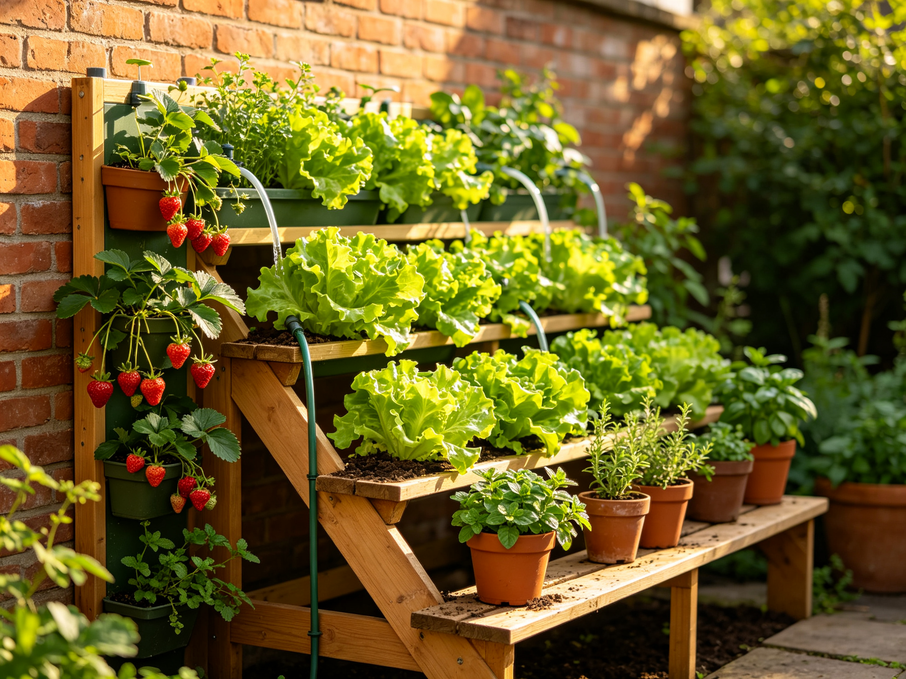

Vertical Container Gardening: Grow a Garden on a Wall, Fence, or Balcony Rail
You don't need a yard to have a real garden — you need a wall, a fence, or a balcony rail. Vertical container gardening stacks your crops upward, turning dead space into a productive food garden. It's the perfect answer for small patios, urban balconies, and anyone who wants more food than their floor space allows.
Why Go Vertical
Ground space is finite; vertical space is nearly free. A single sunny wall can hold a dozen plants that would otherwise need a 4×8 foot bed. Vertical gardens also catch better airflow (less mildew), look stunning, and bring your harvest to eye level where it's easier to pick. If you've already tried container gardening on a balcony, going vertical is the natural next step.
The Four Easiest Vertical Systems
1. Stacked planter towers
Purpose-built stacking planters — or a simple tiered shelf — give each pot its own slot. They're the simplest to set up and water, and ideal for herbs and compact greens. Start here if you're new to vertical gardening.
2. Pocket and gutter walls
Felt pocket planters or lengths of recycled rain gutter mounted to a fence turn a vertical surface into a shallow growing trough. Perfect for strawberries, lettuce, and herbs with shallow roots. Just be sure to reinforce the wall — wet soil is heavy.
3. Pallet gardens
A wooden pallet laid on its side, stapled with landscape fabric, becomes a vertical bed with several planting pockets. Cheap, rustic, and endlessly customizable. Great for leafy greens.
4. Trellis + pot combinations
Climbing plants like beans, cucumbers, and peas do best climbing a trellis while their roots stay in a ground-level pot. This "grow up" method is the classic vertical trick — see our cucumber guide for the trellis technique.
The Best Plants for Vertical Growing
- Leafy greens — lettuce, spinach, kale, Swiss chard. Shallow roots, fast harvest, perfect for pockets.
- Strawberries — cascade beautifully from towers and gutters; see our strawberry guide.
- Herbs — basil, thyme, oregano, mint. Compact, forgiving, and always in reach.
- Climbers — beans, peas, cucumbers, cherry tomatoes on a trellis.
- Radishes and scallions — quick crops that fit any nook.
The #1 Rule: Water From the Top
Water runs downhill, so a vertical garden dries out from the top down — the top pockets shed water onto the ones below. Always water from the top and let it cascade; check the top pockets most often, since they dry fastest. A simple drip line or a watering wand with a gentle setting makes this much easier. Add a saucer or tray at the base to catch runoff, and you've solved the vertical gardener's biggest headache.
Weight and Structure: Don't Guess
Wet soil is surprisingly heavy — roughly 1.5 kg (3 lb) per liter of mix. A wall of ten pots can easily exceed 50 kg (110 lb). Before mounting anything, check what your wall or railing can hold. Freestanding towers need no anchors; anything wall-mounted needs proper brackets. If in doubt, use lighter coco coir-based mixes and smaller pots, or lean on freestanding tiers instead.
Sunlight: The Hidden Constraint
Most food crops need 6+ hours of direct sun, and vertical walls may shade their own lower pockets. Face the garden toward the sunniest direction, keep the top rows for sun-loving plants (tomatoes, peppers), and use lower or shadier spots for leafy greens and herbs that tolerate less light. You'll get a full garden out of even a narrow sunny strip.
Vertical gardening pairs beautifully with other space-saving techniques — for more on making the most of a small footprint, see our raised bed guide and companion planting guide.